packages_to_install <- c("ggplot2", "forecast", "RJDemetra", "patchwork", "lmtest",
"tsibble", "fable", "feasts", "dplyr", "lubridate")
packages <- installed.packages()[,"Package"][! packages_to_install %in% installed.packages()[,"Package"]]
if (length(packages) > 0) {
install.packages(packages)
}5 - Modèles ARIMA
Analyse des séries temporelles avec R
L’objectif de ce TP est d’apprendre à manipuler des modèles (S)ARIMA
Les modèles ARIMA peuvent être estimés grâce à plusieurs fonctions, sans être exhaustif :
stats::arima()dans les fonctions de base de R ;forecast::Arima()basée surstats::arima()mais qui permet d’ajouter un terme de dérive et se manipule plus facilement avec autres fonctions deforecast;fable::ARIMA()commeforecast::Arima()mais pour les objetstsibble.
Les packages suivants seront utilisés :
Le but des prochains exercices est d’étudier les séries classiques
LakeHuronniveau annuel du Lac de Huron ;sunspot.yearnombre annuel de tâches solaires entre 1770 et 1869 ;AirPassengersnombre mensuel de passagers aériens ;nottemtempérature mensuelle moyenne au chateau de Nottingham.
Niveau du Lac de Huron
Exercice
Étudier la série LakeHuron : Faut-il transformer la série ? Quel modèle ARIMA parait adapté ? la série est elle stationnaire ? Comparer avec auto.arima().
Indice
Analyser les ACF/PACF : est-ce qu’ils ressemblent à ceux d’une marche aléatoire ?
Solution
library(forecast)
library(patchwork)
autoplot(LakeHuron)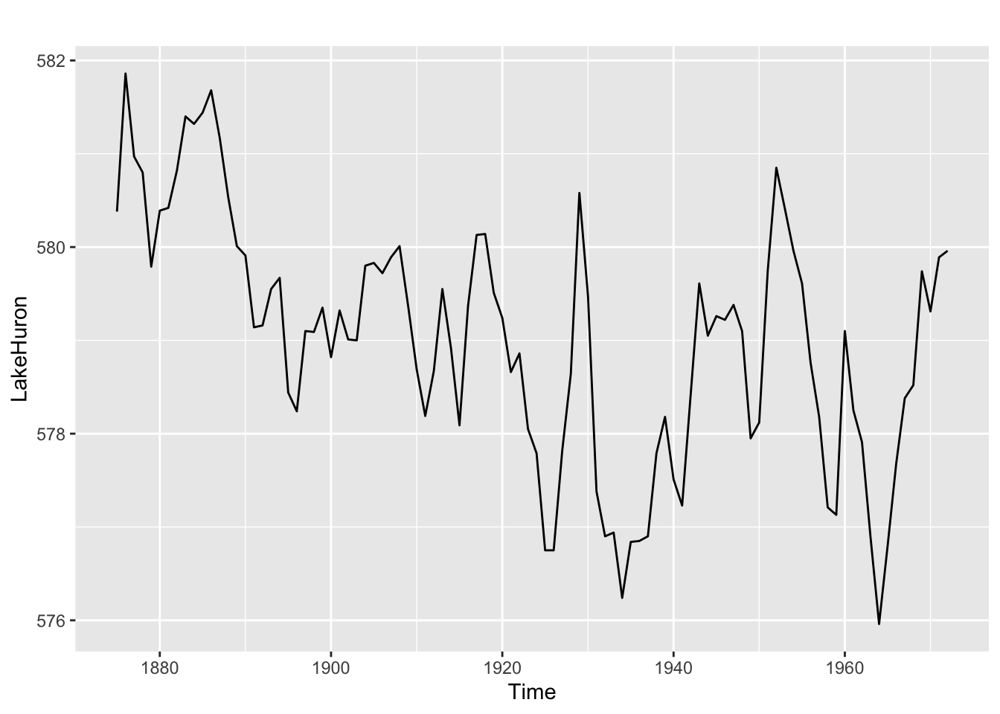
Il y a potentiellement une tendance à la baisse donc peut-être une tendance à la baisse. A priori pas de raison de transformer la série.
tseries::kpss.test(LakeHuron, "Trend")
KPSS Test for Trend Stationarity
data: LakeHuron
KPSS Trend = 0.20006, Truncation lag parameter = 3, p-value = 0.01598tseries::adf.test(LakeHuron)
Augmented Dickey-Fuller Test
data: LakeHuron
Dickey-Fuller = -2.7796, Lag order = 4, p-value = 0.254
alternative hypothesis: stationary# Les tests KPSS et ADF considèrent que la série est non-stationnaire
# ggAcf(LakeHuron) /
# ggPacf(LakeHuron)
ggtsdisplay(LakeHuron)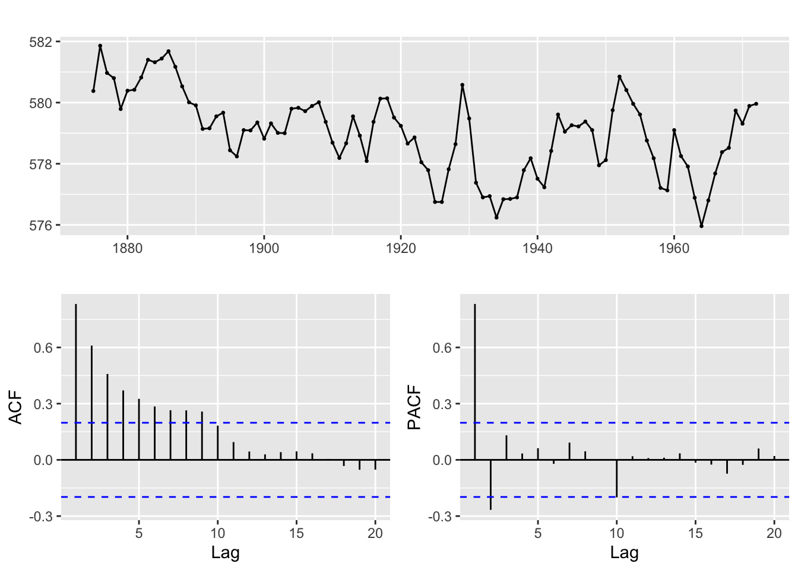
L’ACF décroit de manière exponentielle et rapidement vers 0, ce n’est pas un signe de marche aléatoire. En revanche le premier coefficient est élevé ce qui peut laisser penser que l’on n’a pas une marche aléatoire mais un coefficient AR(1) élevé. Le PACF est nul à partir de l’ordre 3 : cela peut laisser penser à un processus AR d’ordre au plus 2. On estime un modèle ARIMA(2,0,0) avec une tendance (drift).
mod_trend <- Arima(LakeHuron, order = c(2, 0, 0), include.drift = TRUE)
mod_trendSeries: LakeHuron
ARIMA(2,0,0) with drift
Coefficients:
ar1 ar2 intercept drift
1.0048 -0.2913 580.0915 -0.0216
s.e. 0.0976 0.1004 0.4636 0.0081
sigma^2 = 0.476: log likelihood = -101.2
AIC=212.4 AICc=213.05 BIC=225.32# Le coefficient AR(1) est très proche de 1 ce qui explique que les tests précédents concluent à une non-stationnarité
lmtest::coeftest(mod_trend) # tous les coefficients sont significatifs, pas de raison de simplifier
z test of coefficients:
Estimate Std. Error z value Pr(>|z|)
ar1 1.0048037 0.0976112 10.2939 < 2.2e-16 ***
ar2 -0.2913198 0.1003652 -2.9026 0.003701 **
intercept 580.0915109 0.4635882 1251.3079 < 2.2e-16 ***
drift -0.0215688 0.0080988 -2.6632 0.007740 **
---
Signif. codes: 0 '***' 0.001 '**' 0.01 '*' 0.05 '.' 0.1 ' ' 1# A priori les résidus sont un bruit blanc :
checkresiduals(mod_trend) 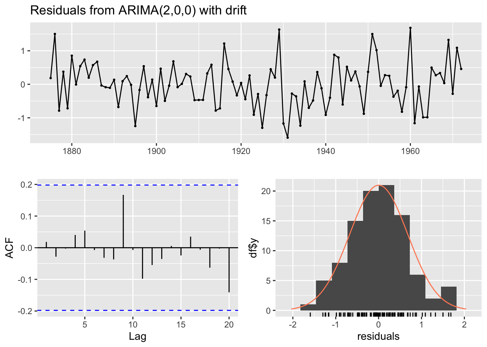
Ljung-Box test
data: Residuals from ARIMA(2,0,0) with drift
Q* = 3.9283, df = 8, p-value = 0.8635
Model df: 2. Total lags used: 10cpgram(residuals(mod_trend))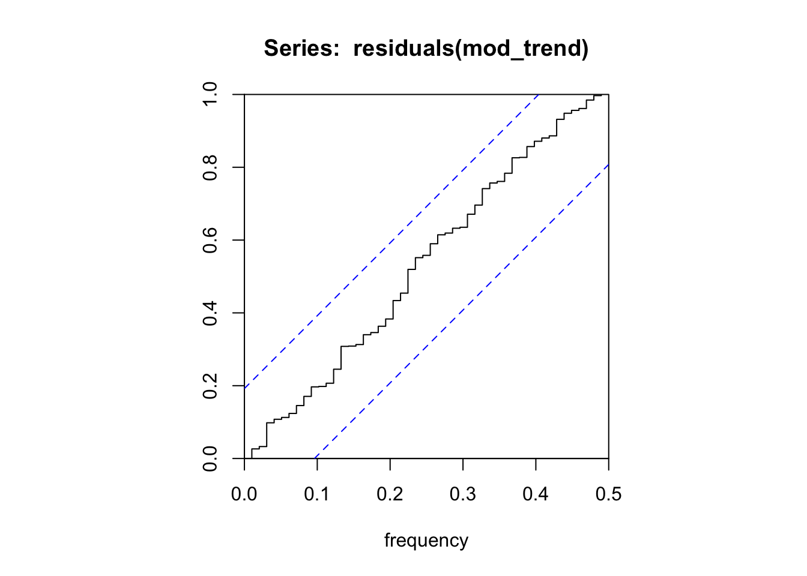
# En considérant un AR(1) on a un modèle avec un AIC plus grand
mod_trend_ar1 <- Arima(LakeHuron, order = c(1, 0, 0), include.drift = TRUE)
mod_trend_ar1Series: LakeHuron
ARIMA(1,0,0) with drift
Coefficients:
ar1 intercept drift
0.7835 580.0936 -0.0204
s.e. 0.0634 0.6075 0.0105
sigma^2 = 0.5122: log likelihood = -105.23
AIC=218.45 AICc=218.88 BIC=228.79# On aurait aussi pu faire un ARIMA(0,1,0) : c'est ce qui est retenu par auto.arima()
mod_diff <- auto.arima(LakeHuron)
mod_diffSeries: LakeHuron
ARIMA(0,1,0)
sigma^2 = 0.5588: log likelihood = -109.11
AIC=220.22 AICc=220.26 BIC=222.79Attention : on ne peut comparer les modèles en utilisant l’AIC ! (ordre de différenciation différent). Pour comparer les modèles on peut étudier les erreurs de prévision.
far2 <- function(x, h){forecast(Arima(x, order = c(2, 0, 0), include.drift = TRUE), h = h)}
fdiff <- function(x, h){forecast(Arima(x, order = c(0, 1, 0)), h = h)}
e1 <- tsCV(LakeHuron, far2, h = 1)
e2 <- tsCV(LakeHuron, fdiff, h = 1)
e_oos <- na.omit(ts.union(e1, e2))
# MSE plus petite avec second modèle
colMeans(e_oos^2) e1 e2
0.6151966 0.5409957 # Mais cela vient du fait que lorsqu'il y a peu d'observations, le premier modèle est instable
colMeans(window(e_oos,start = 1890)^2) e1 e2
0.5598778 0.5847280 colMeans(window(e_oos,start = 1900)^2) e1 e2
0.5806291 0.6187056 # Résidus In Sample toujours plus petits avec premier modèle
# On commence en 1878 car ce n'est qu'après cette date que les résidus sont calculés par MLE
e_is <- window(ts.union(residuals(mod_trend), residuals(mod_diff)), start = 1878)
colMeans(e_is^2)residuals(mod_trend) residuals(mod_diff)
0.4404010 0.5356053 colMeans(window(e_is,start = 1890)^2)residuals(mod_trend) residuals(mod_diff)
0.4671440 0.5778036 colMeans(window(e_is,start = 1900)^2)residuals(mod_trend) residuals(mod_diff)
0.4956467 0.6140781 Nombre annuel de tâches solaires
Exercice
Étudier la série sunspot.year entre 1770 et 1869 : Faut-il transformer la série ? Quel modèle ARIMA parait adapté ? la série est elle stationnaire ? Comparer avec auto.arima().
Solution
library(forecast)
library(patchwork)
y <- window(sunspot.year, start = 1770, end = 1869)
ggtsdisplay(y)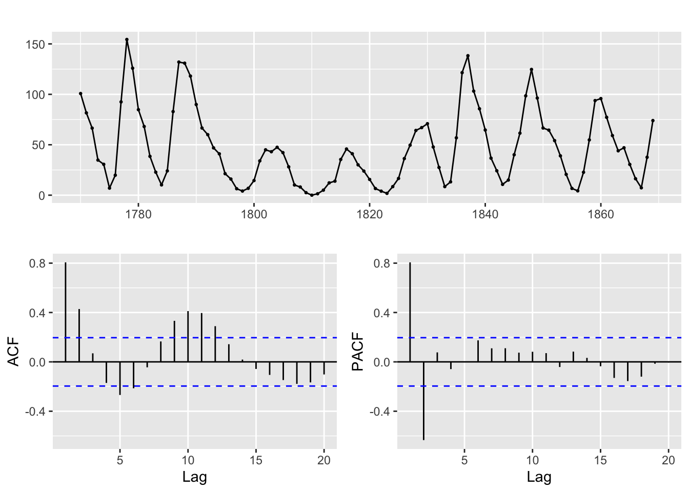
Pas de tendance ni de raison de transformer la série. Il y a des mouvements cycliques. A priori pas de raison de transformer la série. A priori pas une marche aléatoire.
tseries::kpss.test(y)
KPSS Test for Level Stationarity
data: y
KPSS Level = 0.15928, Truncation lag parameter = 4, p-value = 0.1tseries::adf.test(y)
Augmented Dickey-Fuller Test
data: y
Dickey-Fuller = -3.8579, Lag order = 4, p-value = 0.01889
alternative hypothesis: stationaryLes tests KPSS et ADF considèrent que la série est non-stationnaire. On remarque que l’ACF décroit rapidement vers O de manière sinusodiale et que le PACF est nul à partir de l’ordre 3 : on estime un AR2.
mod_ar2 <- Arima(y, order = c(2, 0, 0))
mod_ar2Series: y
ARIMA(2,0,0) with non-zero mean
Coefficients:
ar1 ar2 mean
1.4059 -0.7111 48.2642
s.e. 0.0706 0.0702 4.9747
sigma^2 = 236.5: log likelihood = -414.94
AIC=837.88 AICc=838.3 BIC=848.3lmtest::coeftest(mod_ar2) # tous les coefficients sont significatifs, pas de raison de simplifier
z test of coefficients:
Estimate Std. Error z value Pr(>|z|)
ar1 1.405873 0.070572 19.9212 < 2.2e-16 ***
ar2 -0.711095 0.070242 -10.1235 < 2.2e-16 ***
intercept 48.264166 4.974715 9.7019 < 2.2e-16 ***
---
Signif. codes: 0 '***' 0.001 '**' 0.01 '*' 0.05 '.' 0.1 ' ' 1# A priori les résidus sont un bruit blanc :
checkresiduals(mod_ar2) 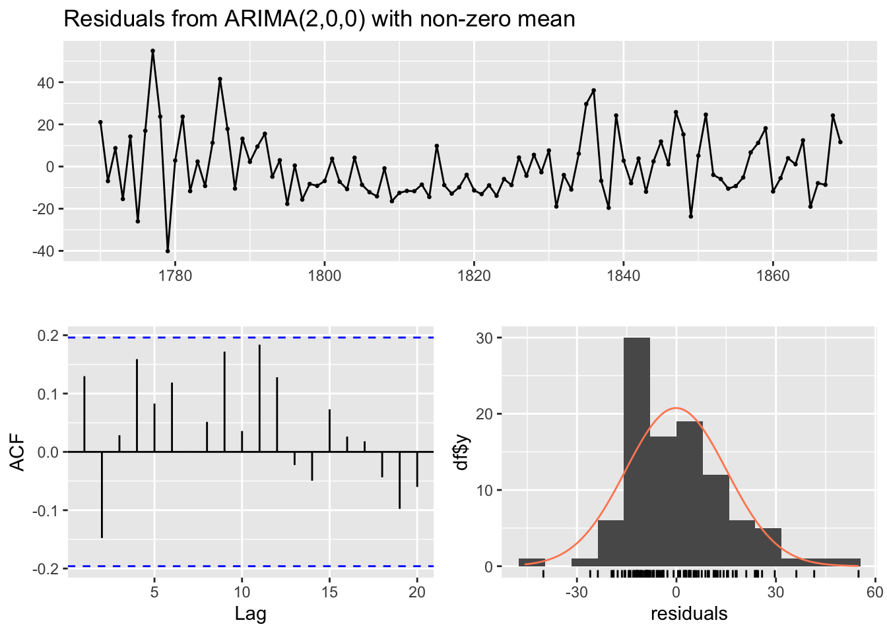
Ljung-Box test
data: Residuals from ARIMA(2,0,0) with non-zero mean
Q* = 12.793, df = 8, p-value = 0.1192
Model df: 2. Total lags used: 10cpgram(residuals(mod_ar2))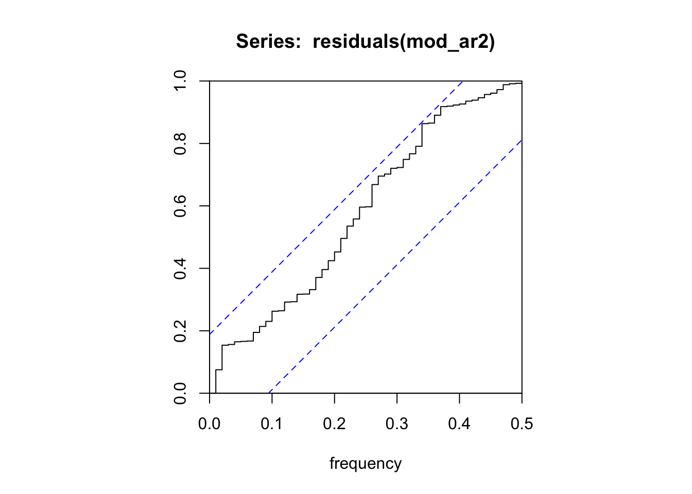
# Auto.arima sélectionne un ARIMA(2,0,1) qui a un AICc plus petit
mod_auto <- auto.arima(y)
mod_autoSeries: y
ARIMA(2,0,1) with non-zero mean
Coefficients:
ar1 ar2 ma1 mean
1.2273 -0.5620 0.3733 48.5319
s.e. 0.1134 0.1084 0.1344 6.0130
sigma^2 = 225.1: log likelihood = -412.05
AIC=834.09 AICc=834.73 BIC=847.12accuracy(mod_ar2) ME RMSE MAE MPE MAPE MASE ACF1
Training set -0.1065321 15.14691 12.03611 -Inf Inf 0.7027453 0.1297447accuracy(mod_auto) ME RMSE MAE MPE MAPE MASE ACF1
Training set -0.1925486 14.70035 11.89705 -Inf Inf 0.6946261 -0.02480733far2 <- function(x, h){forecast(Arima(x, order=c(2, 0, 0)), h = h)}
far2ma1 <- function(x, h){forecast(Arima(x, order=c(2, 0, 1)), h = h)}
e1 <- tsCV(y, far2, h = 1)
e2 <- tsCV(y, far2ma1, h = 1)
e_oos <- window(ts.intersect(e1, e2), start = 1780)
# MSE plus petite avec second modèle
colMeans(e_oos^2, na.rm = TRUE) e1 e2
217.5813 204.6266 Mombre mensuel de passagers aériens ;
Exercice
Étudier la série AirPassengers : Faut-il transformer la série ? Quel modèle ARIMA parait adapté ? la série est elle stationnaire ? Comparer avec auto.arima().
Solution
autoplot(AirPassengers)
Tendance claire avec une saisonnalité multiplicative. Il faut passer la série au log.
ggtsdisplay(log(AirPassengers))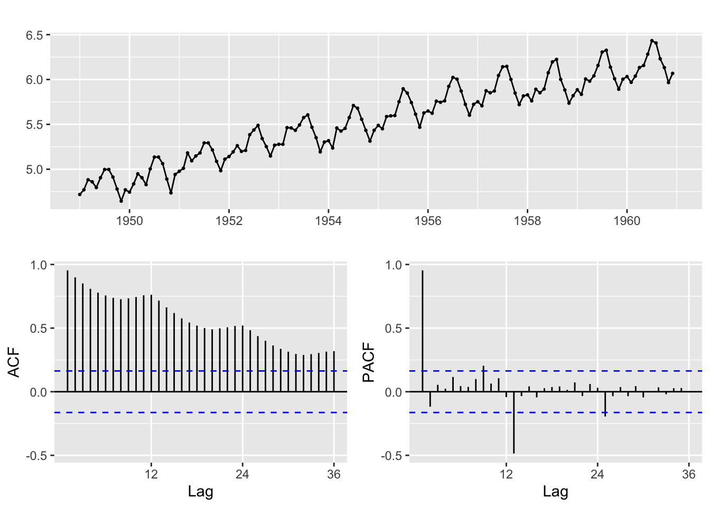
L’analyse de l’ACF montre une décroissance lente avec des pics saisonniers. L’analyse du PACF montre deux pics : à l’ordre 1 proche de 1 et à l’ordre 13. Le second pic à l’ordre 13 et non 12 peut suggérer une double différenciation \((1-B)(1-B^{12})\). La présence d’une saisonnalité a déjà été analysée dans les précédents TP : un test n’est pas nécessaire et on peut différencier à l’ordre 12.
ggtsdisplay(diff(log(AirPassengers), 12))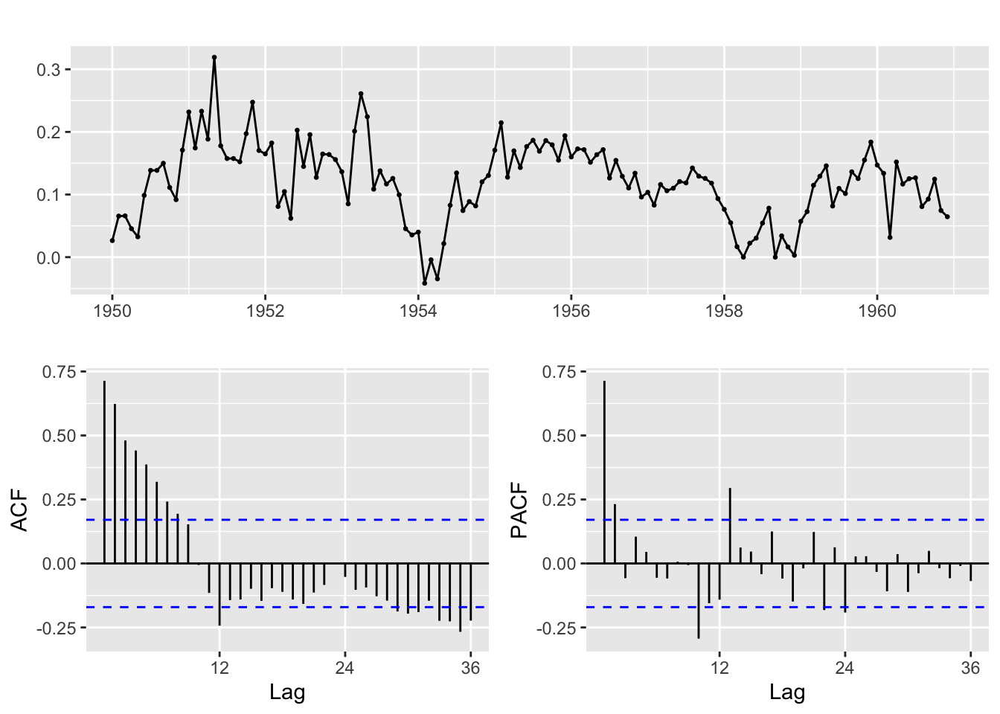
La série différenciée ne présente pas de tendance mais des périodes de hausse et de baisse. L’ACF décroit vers 0 mais pas de manière exponentielle. Le premier coefficient de l’ACF/PACF est élevé ce qui peut laisser penser que la série est toujours non-stationnaire
tseries::kpss.test(diff(log(AirPassengers), 12))
KPSS Test for Level Stationarity
data: diff(log(AirPassengers), 12)
KPSS Level = 0.36816, Truncation lag parameter = 4, p-value = 0.09088tseries::adf.test(diff(log(AirPassengers), 12))
Augmented Dickey-Fuller Test
data: diff(log(AirPassengers), 12)
Dickey-Fuller = -3.1899, Lag order = 5, p-value = 0.09265
alternative hypothesis: stationarytseries::pp.test(diff(log(AirPassengers), 12))
Phillips-Perron Unit Root Test
data: diff(log(AirPassengers), 12)
Dickey-Fuller Z(alpha) = -37.597, Truncation lag parameter = 4, p-value
= 0.01
alternative hypothesis: stationary# Les tests KPSS, ADF et PP donnent des résultats différents : à 5 % le test KPSS ne rejette l'hypothèse nulle de stationnarité, le test de PP rejette l'hypothèse de non-stationnarité alors qu'ADF ne la rejette pas.
ndiffs(diff(log(AirPassengers), 12))[1] 1La fonction ndiffs(), basée par défaut sur KPSS conclue à une non-stationnarité. Cela vient de paramètres différents dans le test KPSS utilisé. L’analyse des ACF semblent plutôt montrer un présence de marche aléatoire : on différencie. Les ACF et PACF semblent montrer une saisonnalité encore présente mais pas de décroissance nette de l’ACF ou PACF.
ggAcf(diff(diff(log(AirPassengers), 12), 1)) /
ggPacf(diff(diff(log(AirPassengers), 12), 1))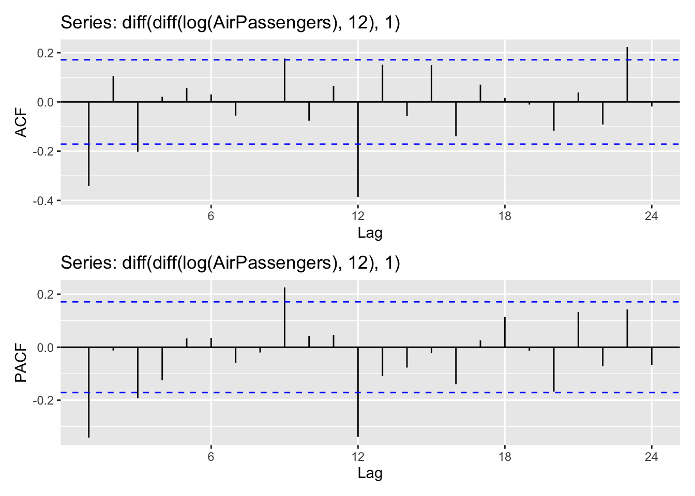
mod = Arima(AirPassengers, order = c(0,1,0), seasonal = c(1,1,1), lambda = 0)
Box.test(resid(mod), fitdf = 2,lag = 24,type = "Ljung")
Box-Ljung test
data: resid(mod)
X-squared = 48.603, df = 22, p-value = 0.0009028cpgram(resid(mod))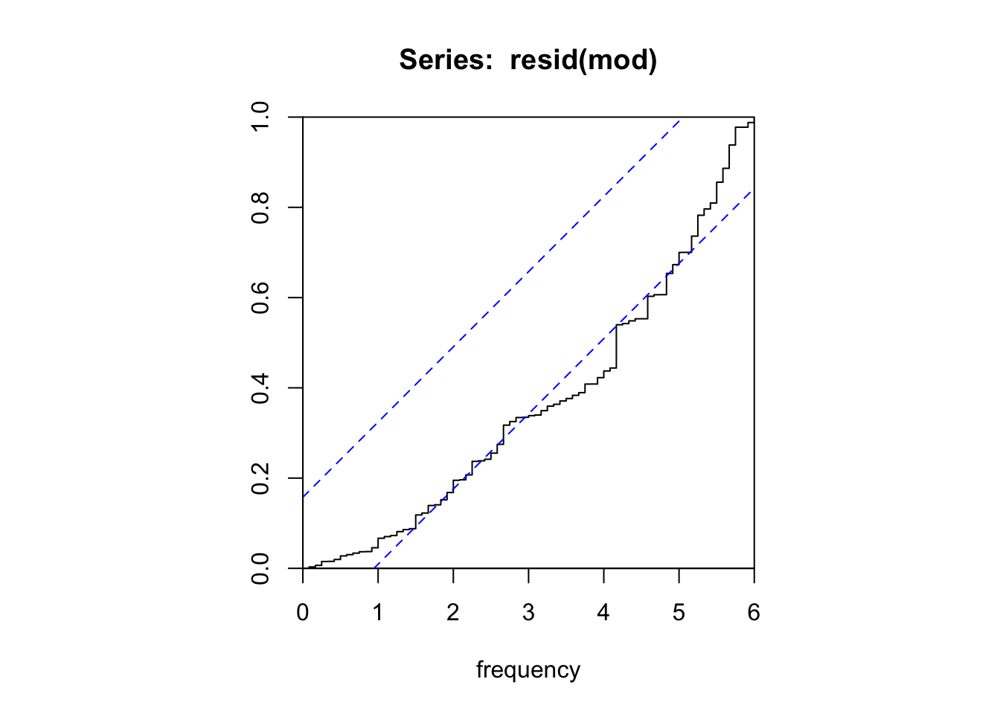
# checkresiduals(mod)Les résidus ne sont pas un bruit blanc
ggAcf(residuals(mod)) /
ggPacf(residuals(mod))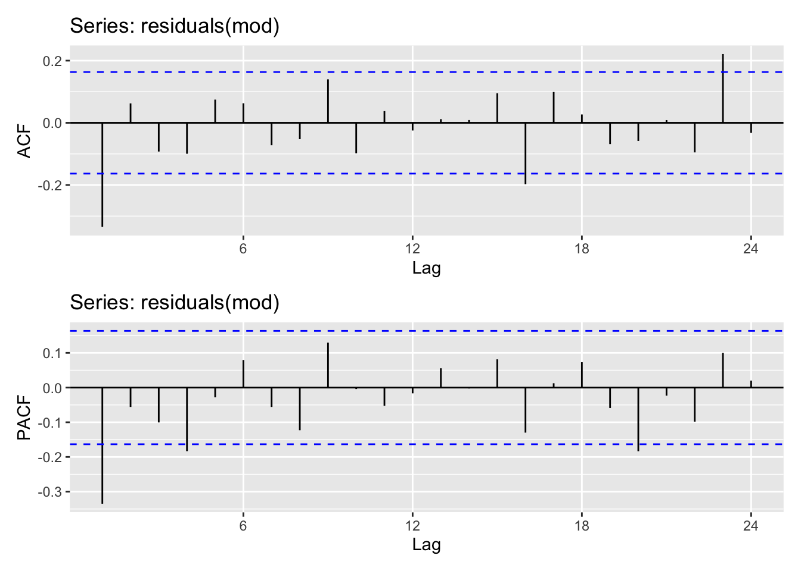
Encore pas de décroissance claire mais un pic à l’ordre 1. On peut donc penser que \(p,q, P,q \leq 1\)
mod1 <- Arima(AirPassengers, order = c(1,1,1), seasonal = c(1,1,1), lambda = 0)
# On a bien un bruit blanc cette fois
Box.test(resid(mod1), fitdf = 4,lag = 24,type = "Ljung")
Box-Ljung test
data: resid(mod1)
X-squared = 24.669, df = 20, p-value = 0.2144cpgram(resid(mod1))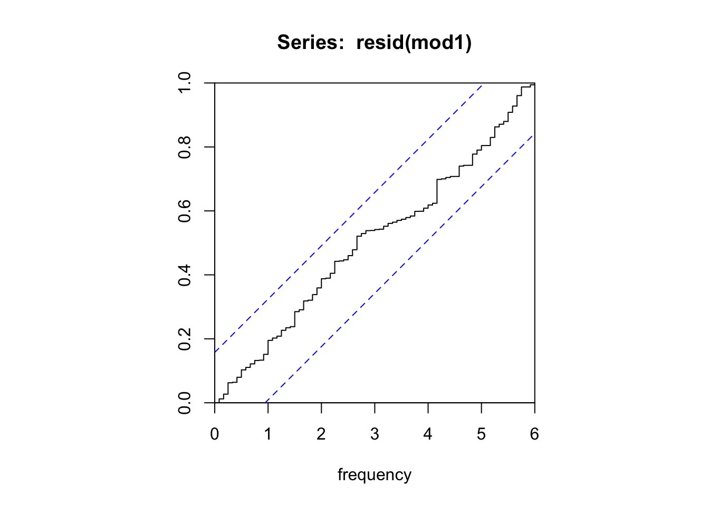
lmtest::coeftest(mod1)
z test of coefficients:
Estimate Std. Error z value Pr(>|z|)
ar1 0.166649 0.245890 0.6777 0.4979380
ma1 -0.561499 0.211550 -2.6542 0.0079493 **
sar1 -0.099007 0.153981 -0.6430 0.5202347
sma1 -0.497321 0.135967 -3.6577 0.0002545 ***
---
Signif. codes: 0 '***' 0.001 '**' 0.01 '*' 0.05 '.' 0.1 ' ' 1Les ordres AR ne sont pas significatifs significatifs. On va enlever un ordre AR et refaire le test : ne pas enlever toutes les variables en même temps car on teste ici si une variable est nulle et non pas si un ensemble de variables est nul !
mod2 <- Arima(AirPassengers, order = c(0,1,1), seasonal = c(1,1,1), lambda = 0)
# Toujours un bruit blanc et AR saisonnier non significatif
Box.test(resid(mod2), fitdf = 3,lag = 24,type = "Ljung")
Box-Ljung test
data: resid(mod2)
X-squared = 25.475, df = 21, p-value = 0.2272lmtest::coeftest(mod2)
z test of coefficients:
Estimate Std. Error z value Pr(>|z|)
ma1 -0.414254 0.089933 -4.6063 4.1e-06 ***
sar1 -0.111647 0.154748 -0.7215 0.4706159
sma1 -0.481706 0.136304 -3.5341 0.0004092 ***
---
Signif. codes: 0 '***' 0.001 '**' 0.01 '*' 0.05 '.' 0.1 ' ' 1mod3 = Arima(AirPassengers, order = c(0,1,1), seasonal = c(0,1,1), lambda = 0)
# Toujours un bruit blanc et tous les coefs sont signifactifs, on ne peut pas simplifier davantage
Box.test(resid(mod3), fitdf = 2,lag = 24,type = "Ljung")
Box-Ljung test
data: resid(mod3)
X-squared = 26.446, df = 22, p-value = 0.233lmtest::coeftest(mod3)
z test of coefficients:
Estimate Std. Error z value Pr(>|z|)
ma1 -0.401828 0.089644 -4.4825 7.378e-06 ***
sma1 -0.556945 0.073100 -7.6190 2.557e-14 ***
---
Signif. codes: 0 '***' 0.001 '**' 0.01 '*' 0.05 '.' 0.1 ' ' 1# C'est le dernier modèle qui a l'AIC le plus petit : c'est celui que l'on retient
AIC(mod1, mod2, mod3) df AIC
mod1 5 -480.3109
mod2 4 -481.9131
mod3 3 -483.3991# C'est aussi le modèle retenu par auto.arima
auto.arima(AirPassengers, lambda = 0)Series: AirPassengers
ARIMA(0,1,1)(0,1,1)[12]
Box Cox transformation: lambda= 0
Coefficients:
ma1 sma1
-0.4018 -0.5569
s.e. 0.0896 0.0731
sigma^2 = 0.001371: log likelihood = 244.7
AIC=-483.4 AICc=-483.21 BIC=-474.77# auto.arima(AirPassengers, lambda = 0, stepwise = FALSE) # plus lentOn retrouve le modèle Airline : \(ARIMA(0,1,1)(0,1,1)\) !
Température mensuelle moyenne au chateau de Nottingham
Pour l’analyse de la série nottem, on utilisera le tidyverts. Ci-dessous un exemple de manipulation avec une autre série :
library(tsibble)
library(dplyr)
library(fable)
library(feasts)
library(ggplot2)
y <- as_tsibble(USAccDeaths)
y# A tsibble: 72 x 2 [1M]
index value
<mth> <dbl>
1 1973 jan 9007
2 1973 fév 8106
3 1973 mar 8928
4 1973 avr 9137
5 1973 mai 10017
6 1973 jui 10826
7 1973 jul 11317
8 1973 aoû 10744
9 1973 sep 9713
10 1973 oct 9938
# … with 62 more rows(y %>% ACF(value %>% difference(12)) %>% autoplot()) /
(y %>% PACF(value %>% difference(12)) %>% autoplot()) & ylim(-1,1)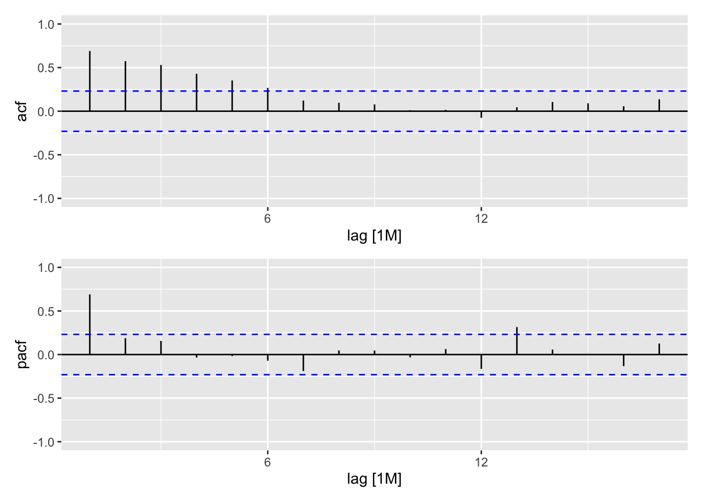
model <- y %>%
model(arima = ARIMA(value ~ 0 + pdq(0, 1, 1) + PDQ(0, 1, 0)),
auto_arima = ARIMA(value))
model # A mable: 1 x 2
arima auto_arima
<model> <model>
1 <ARIMA(0,1,1)(0,1,0)[12]> <ARIMA(0,1,1)(0,1,1)[12]>model %>% accuracy()# A tibble: 2 × 10
.model .type ME RMSE MAE MPE MAPE MASE RMSSE ACF1
<chr> <chr> <dbl> <dbl> <dbl> <dbl> <dbl> <dbl> <dbl> <dbl>
1 arima Training 44.0 321. 230. 0.477 2.70 0.526 0.574 0.00648
2 auto_arima Training 58.8 285. 201. 0.665 2.35 0.460 0.510 -0.0239 model %>% glance()# A tibble: 2 × 8
.model sigma2 log_lik AIC AICc BIC ar_roots ma_roots
<chr> <dbl> <dbl> <dbl> <dbl> <dbl> <list> <list>
1 arima 128002. -430. 865. 865. 869. <cpl [0]> <cpl [1]>
2 auto_arima 102860. -425. 857. 857. 863. <cpl [0]> <cpl [13]>model %>% residuals() %>% ACF() %>% autoplot()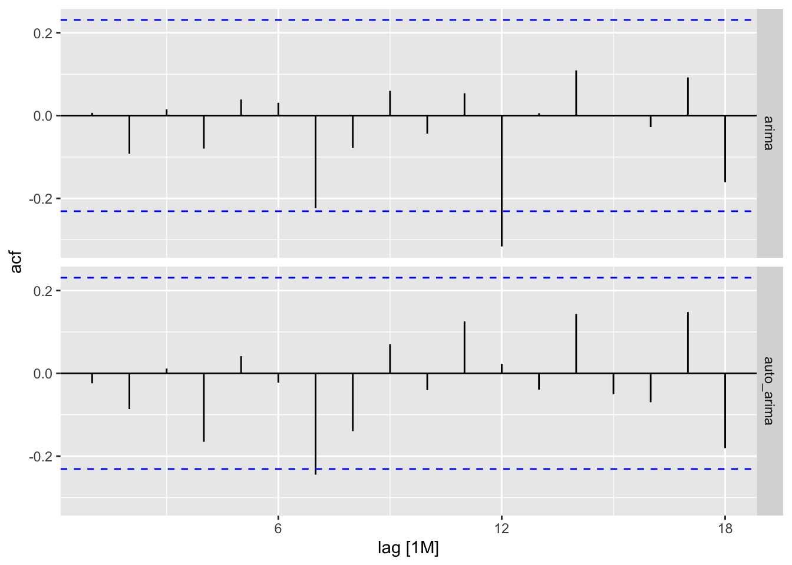
# On peut utiliser la fonction report() sur un sous modèle
model %>% select(auto_arima) %>%
report()Series: value
Model: ARIMA(0,1,1)(0,1,1)[12]
Coefficients:
ma1 sma1
-0.4303 -0.5528
s.e. 0.1228 0.1784
sigma^2 estimated as 102860: log likelihood=-425.44
AIC=856.88 AICc=857.32 BIC=863.11model %>%
forecast(h=12) %>%
autoplot(y)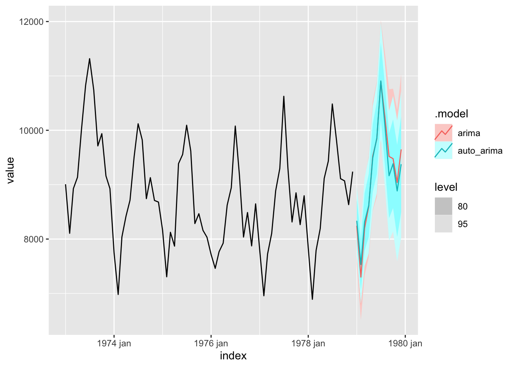
Exercice
Étudier la série as_tsibble(nottem) :
- Faut-il transformer la série ?
- Faut-il différencier la série ? (utiliser la fonction
difference()) - Étudier les ACF/PACF : quels sont les ordre plausibles ?
- Tester un ensemble de modèles possibles. Les trier par AICc et prendre celui qui le minimise.
- Vérifier la qualité des résidus
- Comparer les prévisions avec une sélection automatique et avec un modèle ETS.
Solution
library(lubridate)
y <- as_tsibble(nottem)
autoplot(y, value)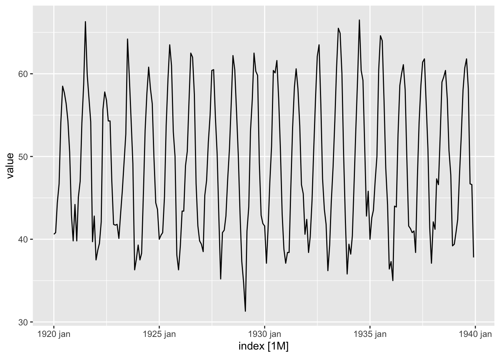
gg_season(y, value)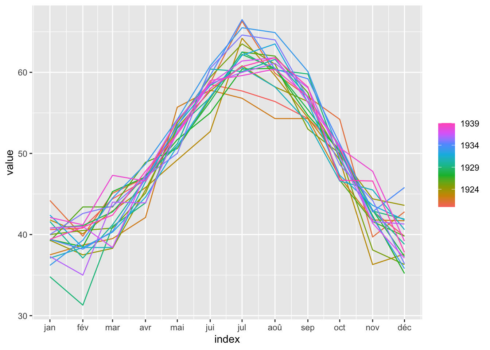
Série déjà étudiée : a priori pas de transformation nécessaire, pas de tendance et saisonnalité mensuelle nette.
y %>% gg_tsdisplay(value %>% difference(12), plot_type = "partial")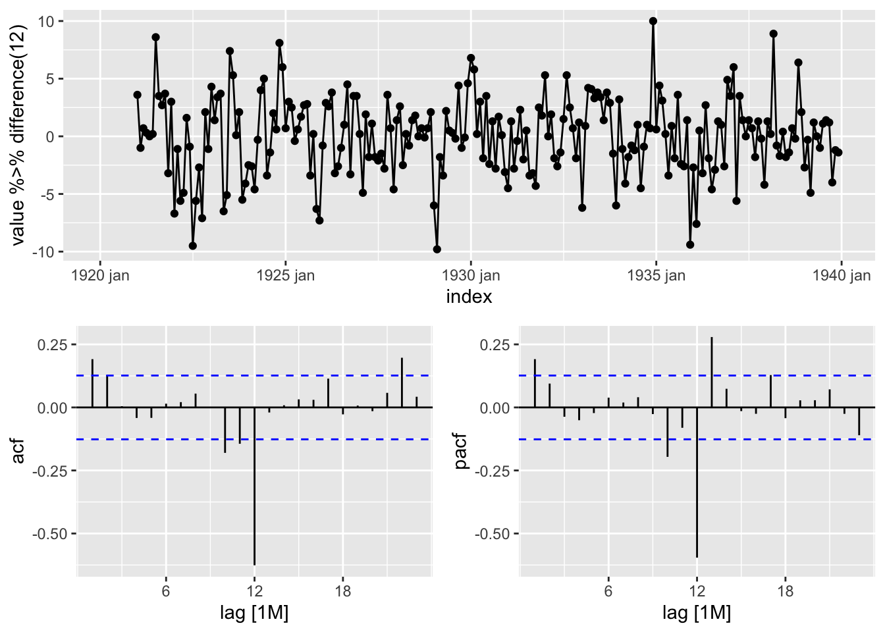
A priori série différenciée est stationnaire. L’analyse des ACF/PACF suggère \(P= 1\) et/ou \(Q=1\), \(P<=1\) et \(Q <= 2\). Pas de constante dans le modèle.
# Si on ne veut pas écrire tous les codes à la main on peut aussi faire un programme
# d = expand.grid(p=0:1,q=0:2,P=0:1, Q=0:1)
# cat(sprintf("sarima%i0%i_%i1%i = ARIMA(value ~ -1 + pdq(%i, 0, %i) + PDQ(%i, 1, %i))",
# d$p, d$q, d$P, d$Q,
# d$p, d$q, d$P, d$Q), sep =",\n")
all_models <- y %>%
model(
sarima000_010 = ARIMA(value ~ -1 + pdq(0, 0, 0) + PDQ(0, 1, 0)),
sarima100_010 = ARIMA(value ~ -1 + pdq(1, 0, 0) + PDQ(0, 1, 0)),
sarima001_010 = ARIMA(value ~ -1 + pdq(0, 0, 1) + PDQ(0, 1, 0)),
sarima101_010 = ARIMA(value ~ -1 + pdq(1, 0, 1) + PDQ(0, 1, 0)),
sarima002_010 = ARIMA(value ~ -1 + pdq(0, 0, 2) + PDQ(0, 1, 0)),
sarima102_010 = ARIMA(value ~ -1 + pdq(1, 0, 2) + PDQ(0, 1, 0)),
sarima000_110 = ARIMA(value ~ -1 + pdq(0, 0, 0) + PDQ(1, 1, 0)),
sarima100_110 = ARIMA(value ~ -1 + pdq(1, 0, 0) + PDQ(1, 1, 0)),
sarima001_110 = ARIMA(value ~ -1 + pdq(0, 0, 1) + PDQ(1, 1, 0)),
sarima101_110 = ARIMA(value ~ -1 + pdq(1, 0, 1) + PDQ(1, 1, 0)),
sarima002_110 = ARIMA(value ~ -1 + pdq(0, 0, 2) + PDQ(1, 1, 0)),
sarima102_110 = ARIMA(value ~ -1 + pdq(1, 0, 2) + PDQ(1, 1, 0)),
sarima000_011 = ARIMA(value ~ -1 + pdq(0, 0, 0) + PDQ(0, 1, 1)),
sarima100_011 = ARIMA(value ~ -1 + pdq(1, 0, 0) + PDQ(0, 1, 1)),
sarima001_011 = ARIMA(value ~ -1 + pdq(0, 0, 1) + PDQ(0, 1, 1)),
sarima101_011 = ARIMA(value ~ -1 + pdq(1, 0, 1) + PDQ(0, 1, 1)),
sarima002_011 = ARIMA(value ~ -1 + pdq(0, 0, 2) + PDQ(0, 1, 1)),
sarima102_011 = ARIMA(value ~ -1 + pdq(1, 0, 2) + PDQ(0, 1, 1)),
sarima000_111 = ARIMA(value ~ -1 + pdq(0, 0, 0) + PDQ(1, 1, 1)),
sarima100_111 = ARIMA(value ~ -1 + pdq(1, 0, 0) + PDQ(1, 1, 1)),
sarima001_111 = ARIMA(value ~ -1 + pdq(0, 0, 1) + PDQ(1, 1, 1)),
sarima101_111 = ARIMA(value ~ -1 + pdq(1, 0, 1) + PDQ(1, 1, 1)),
sarima002_111 = ARIMA(value ~ -1 + pdq(0, 0, 2) + PDQ(1, 1, 1)),
sarima102_111 = ARIMA(value ~ -1 + pdq(1, 0, 2) + PDQ(1, 1, 1))
)
all_models %>%
glance() %>%
arrange(AICc)# A tibble: 24 × 8
.model sigma2 log_lik AIC AICc BIC ar_roots ma_roots
<chr> <dbl> <dbl> <dbl> <dbl> <dbl> <list> <list>
1 sarima100_111 5.25 -519. 1045. 1045. 1059. <cpl [13]> <cpl [12]>
2 sarima002_111 5.23 -518. 1045. 1046. 1063. <cpl [12]> <cpl [14]>
3 sarima101_111 5.25 -518. 1046. 1046. 1063. <cpl [13]> <cpl [13]>
4 sarima102_111 5.25 -518. 1047. 1048. 1068. <cpl [13]> <cpl [14]>
5 sarima001_111 5.33 -520. 1048. 1048. 1062. <cpl [12]> <cpl [13]>
6 sarima002_011 5.44 -524. 1055. 1056. 1069. <cpl [0]> <cpl [14]>
7 sarima100_011 5.48 -525. 1056. 1056. 1066. <cpl [1]> <cpl [12]>
8 sarima101_011 5.46 -524. 1056. 1056. 1070. <cpl [1]> <cpl [13]>
9 sarima102_011 5.46 -524. 1057. 1057. 1074. <cpl [1]> <cpl [14]>
10 sarima001_011 5.55 -526. 1058. 1058. 1069. <cpl [0]> <cpl [13]>
# … with 14 more rowsbest_model <- y %>%
model(
sarima100_111 = ARIMA(value ~ -1 + pdq(1, 0, 0) + PDQ(1, 1, 1))
)A priori bruit blanc :
best_model %>% gg_tsresiduals()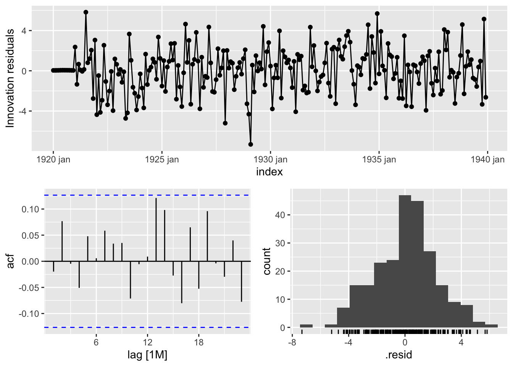
augment(best_model) %>%
features(.innov, ljung_box, dof = 3, lag = 24)# A tibble: 1 × 3
.model lb_stat lb_pvalue
<chr> <dbl> <dbl>
1 sarima100_111 20.6 0.484compar_model <- y %>%
model(
sarima100_111 = ARIMA(value ~ -1 + pdq(1, 0, 0) + PDQ(1, 1, 1)),
auto_arima = ARIMA(value ~ -1),
ets = ETS(value)
)Modèle sélectionné a un AICc plus petit que l’auto-arima mais un RMSE plus élevé.
compar_model# A mable: 1 x 3
sarima100_111 auto_arima ets
<model> <model> <model>
1 <ARIMA(1,0,0)(1,1,1)[12]> <ARIMA(1,0,2)(1,1,2)[12]> <ETS(A,N,A)>compar_model %>% glance()# A tibble: 3 × 11
.model sigma2 log_lik AIC AICc BIC ar_ro…¹ ma_ro…² MSE AMSE MAE
<chr> <dbl> <dbl> <dbl> <dbl> <dbl> <list> <list> <dbl> <dbl> <dbl>
1 sarima100_… 5.25 -519. 1045. 1045. 1059. <cpl> <cpl> NA NA NA
2 auto_arima 5.23 -517. 1048. 1048. 1072. <cpl> <cpl> NA NA NA
3 ets 5.38 -852. 1735. 1737. 1787. <NULL> <NULL> 5.07 5.17 1.74
# … with abbreviated variable names ¹ar_roots, ²ma_rootscompar_model %>% accuracy()# A tibble: 3 × 10
.model .type ME RMSE MAE MPE MAPE MASE RMSSE ACF1
<chr> <chr> <dbl> <dbl> <dbl> <dbl> <dbl> <dbl> <dbl> <dbl>
1 sarima100_111 Training 0.0695 2.22 1.72 -0.127 3.69 0.638 0.647 -0.0197
2 auto_arima Training 0.0711 2.20 1.71 -0.124 3.67 0.635 0.641 0.00160
3 ets Training 0.00726 2.25 1.74 -0.223 3.75 0.647 0.656 0.198 Les prévisions des 3 modèles sont très proches
forecast(compar_model, h = "1 year") %>%
autoplot(y %>% filter(year(index) >= 1938))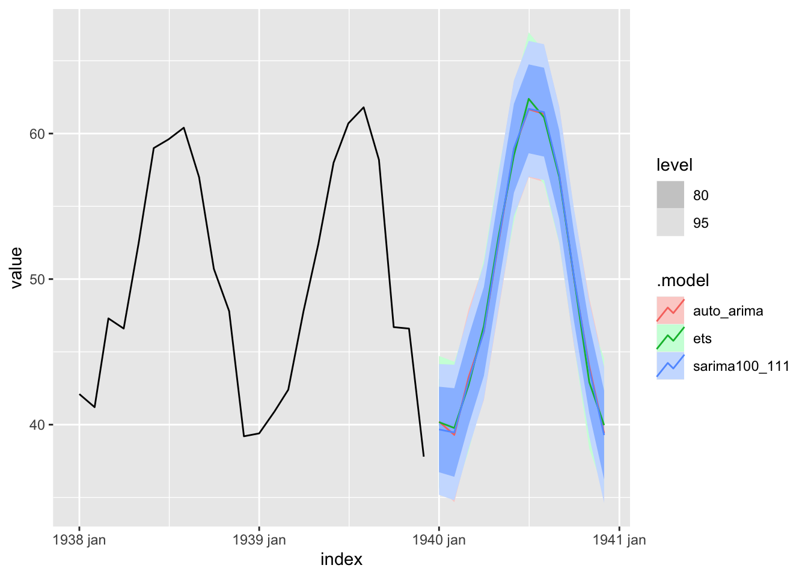
L’avantage est tidyverts est que l’on peut appliquer facilement plusieurs fonctions à plusieurs séries et comparer les méthodes entre elles. En reprenant l’exemple disponible ici https://fable.tidyverts.org :
library(fable)
library(tsibble)
library(tsibbledata)
library(lubridate)
library(dplyr)
aus_retail %>%
filter(
State %in% c("New South Wales", "Victoria"),
Industry == "Department stores"
) %>%
model(
ets = ETS(box_cox(Turnover, 0.3)),
arima = ARIMA(log(Turnover)),
snaive = SNAIVE(Turnover)
) %>%
forecast(h = "2 years") %>%
autoplot(filter(aus_retail, year(Month) > 2010), level = NULL)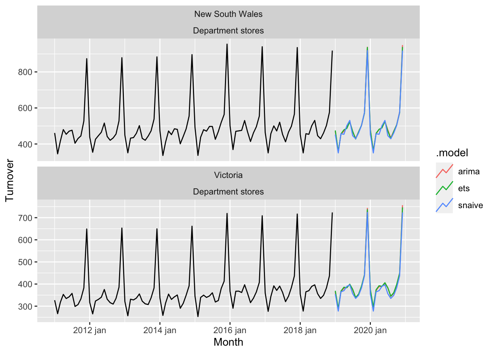